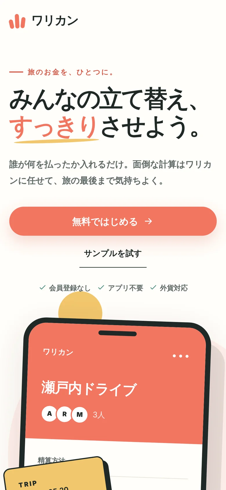
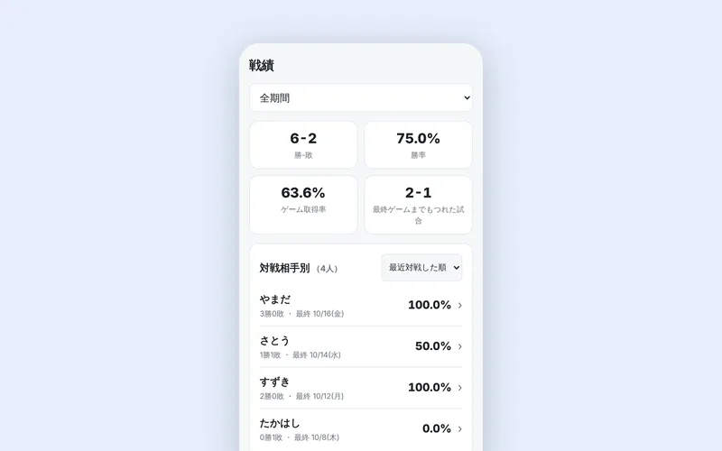

面白くて、できればためになることを、みんなでやる。
三百九十八日の家なし生活を本にし、
運動不足解消もくもく会を主催。
身近な不便を、小さなアプリで
解決しています。
tomochiともち 著本・会・アプリ
目次
第一章家のない
家のない
三百九十八日

398日間、
家がなかった。――『ホームレス大学院生』より
第二章中の上で
中の上で
生きる

毎日が
最高じゃなくていい。――『中の上の人生戦略』より
第三章五十分と
五十分と
十五分

集中 50分
動く 約15分
第四章小さな
小さな
不便の索引

 CutPlay
CutPlay
【かっとぷれい】iOS縦動画を、さくっと編集。スマホで撮った縦長の動画を、縦のまま手軽に編集できるiPhoneアプリ。
App Storeで見る
ワリカン
【わりかん】Webアプリ誰が誰にいくら払うか、すぐ分かる。立て替えを記録するだけで自動で計算。
使ってみるPumpkin
【ぱんぷきん】iOS / Android筋トレを、SNSで続ける。筋トレSNS「Pumpkin」のモバイルアプリの開発メンバー。
App Storeで見る
べんりツールズ
【べんりつーるず】WebツールRM換算や日程調整を、すぐ済ませる。
使ってみる
ノイズクリーナー for YouTube
【のいずくりーなー】Chrome拡張YouTubeの唾の音や「えー」を抑える。
GitHubで見る
ボルダリング交流会
【ぼるだりんぐこうりゅうかい】Webサイトチームで登って、仲良くなる交流会の告知サイト。
サイトを開く
Classic Ping Pong
【くらしっくぴんぽん】ゲームスピンや溜めショットで打ち合えるピンポン。
遊ぶ
卓球戦績メモ
【たっきゅうせんせきめも】Webアプリ試合結果を数タップで記録して、相手ごとに振り返る。
使ってみる